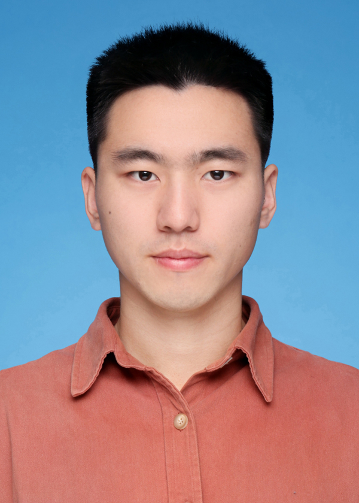

|
Dazhong Shen
|
 |
Dr. Dazhong Shen is a researcher at the Shanghai Artificial Intelligence Laboratory. He received the Ph.D. degree in Computer Science from the University of Science and Technology of China (USTC) under the supervision of Prof. Hui Xiong and Prof. Enhong Chen. Before that, he received the B.S. degree in Mathematics from USTC in 2017. He has also spent time at Talent Intelligent Center, Baidu Inc. as a Research Intern from 2017 to 2022 under the supervision of Dr. Hengshu Zhu. Recently, he is working with Guanglu Song and Yu Liu from SenseTime closely. Here is his Google Scholar.
E-mail: dazh.shen@gmail.com
|
Professional Experiences
Researcher. The Shanghai Artificial Intelligence Laboratory, Jul 2023 - Now
Research Assistant. The Hong Kong University of Science and Technology (Guangzhou), Oct. 2022 - Mar. 2023
Research Intern. Talent Intelligence Center (TIC), Baidu Inc., Feb. 2017 - Jun 2022
Education
Research Interest
His current research focuses on developing effective, efficient, and trustworthy generative models. Some of the current research keywords can be found below:
Diffusion Models
Variational Inference
Graph Neural Network
News
09/2024: 3 papers about T2I Diffusion Model (PCM, CoMat) and MLLM (MoVa) were accepted by NeurIPS, Congrats to all the collaborators!
08/2024: 1 paper (the first author) accepted by IEEE TNNLS.
07/2024: 1 paper accepted by ECCV 2024. Congrats to all the collaborators!
Recent Publication
Fu-Yun Wang, Zhaoyang Huang, Alexander William Bergman, Dazhong Shen, Peng Gao, Michael Lingelbach, Keqiang Sun et al. Phased Consistency Model. The 38th Conference on Neural Information Processing Systems (NeurIPS-2024), 2024.
Dongzhi Jiang, Guanglu Song, Xiaoshi Wu, Renrui Zhang, Dazhong Shen, Zhuofan Zong, Yu Liu, and Hongsheng Li. CoMat: Aligning Text-to-Image Diffusion Model with Image-to-Text Concept Matching. The 38th Conference on Neural Information Processing Systems (NeurIPS-2024), 2024.
Zhuofan Zong, Bingqi Ma, Dazhong Shen, Guanglu Song, Hao Shao, Dongzhi Jiang, Hongsheng Li, and Yu Liu. Mova: Adapting mixture of vision experts to multimodal context. The 38th Conference on Neural Information Processing Systems (NeurIPS-2024), 2024.
Dazhong Shen, Chuan Qin, Qi Zhang, Hengshu Zhu, and Hui Xiong. Handling Over-Smoothing and Over-Squashing in Graph Convolution with Maximization Operation. IEEE Transactions on Neural Networks and Learning Systems (TNNLS), Just Accepted, 2024.
Fu-Yun Wang, Xiaoshi Wu, Zhaoyang Huang, Xiaoyu Shi, Dazhong Shen, Guanglu Song, Yu Liu, Hongsheng Li, Be-Your-Outpainter: Mastering Video Outpainting through Input- Specific Adaptation. European Conference on Computer Vision (ECCV 2024), 2024.
Leilei Ding, Dazhong Shen, Chao Wang, Tianfu Wang, Le Zhang, Hui Xiong, and Yanyong Zhang. DGR: A General Graph Desmoothing Framework for Recommendation via Global and Local Perspectives, The 33rd International Joint Conference on Artificial Intelligence (IJCAI-2024), 2024.
Wei Wu, Chao Wang, Dazhong Shen, Chuan Qin, Liyi Chen, and Hui Xiong. AFDGCF: Adaptive Feature De-correlation Graph Collaborative Filtering for Recommendations, The 47th International ACM SIGIR Conference on Research and Development in Information Retrieval (SIGIR-2024), 2024.
Xiaoshan Yu, Chuan Qin, Dazhong Shen, Haiping Ma, Le Zhang, Xingyi Zhang, Hengshu Zhu, Hui Xiong. RDGT: Enhancing Group Cognitive Diagnosis with Relation-Guided Dual-Side Graph Transformer, IEEE Transactions on Knowledge and Data Engineering (IEEE TKDE), 2024.
Dazhong Shen, Guanglu Song, Zeyue Xue, Fu-Yun Wang, Yu Liu. Rethinking the Spa- tial Inconsistency in Classifier-Free Diffusion Guidance, In Proceedings of the IEEE/CVF Conference on Computer Vision and Pattern Recognition (CVPR-2024), 2024.
Feihu Jiang, Chuan Qin, Jingshuai Zhang, Kaichun Yao, Xi Chen, Dazhong Shen, Chen Zhu, Hengshu Zhu, Hui Xiong. Towards Efficient Resume Understanding: A Multi-Granularity Multi-Modal Pre-Training Approach, The IEEE International Conference on Multimedia and Expo (ICME-2024), 2024.
Hanzhe Li, Jingjing Gu, Xinjiang Lu, Dazhong Shen, Yuting Liu, Yanan Deng, Guoliang Shi, Hui Xiong. Beyond Relevance: Factor-level Causal Explanation for User Travel Decisions with Counterfactual Data Augmentation, ACM Transactions on Information Sys- tems(ACM TOIS), 2024.
Yunfei Zhang, Chuan Qin, Dazhong Shen, Haiping Ma, Le Zhang, Xingyi Zhang, Hengshu Zhu. ReliCD: A Reliable Cognitive Diagnosis Framework with Confidence Awareness, IEEE International Conference on Data Mining (ICDM-2023), 2023.
Dazhong Shen, Hengshu Zhu, Keli Xiao, Xi Zhang, Hui Xiong. Exploiting Connections among Personality, Job Position, and Work Behavior: Evidence from Joint Bayesian Learning. ACM Transactions on Management Information Systems (TMIS), 2023.
Rui Zha, Chuan Qin, Le Zhang, Dazhong Shen, Tong Xu, Hengshu Zhu, Enhong Chen, Career Mobility Analysis with Uncertainty-aware Graph Autoencoders: A Job Title Transition Perspective, In IEEE Transactions on Computational Social Systems (IEEE TCSS), 2023.
Qingxin Meng, Keli Xiao, Dazhong Shen, Hengshu Zhu, Hui Xiong, Fine-Grained Job Salary Benchmarking with a Nonparametric Dirichlet-process-based Latent Factor Model. INFORMS Journal on Computing (JOC), 2022.
Chuan Qin, Kaichun Yao, Hengshu Zhu, Tong Xu, Dazhong Shen, Enhong Chen, Hui Xiong. Towards Automatic Job Description Generation with Capability-Aware Neural Networks, IEEE Transactions on Knowledge and Data Engineering (IEEE TKDE), 2022.
Zhi Zheng, Chao Wang, Tong Xu, Dazhong Shen, Penggang Qin, Xiangyu Zhao, Baoxing Huai, Xian Wu, Enhong Chen. Interaction-aware Drug Package Recommendation via Policy Gradient. ACM Transactions on Information Systems (ACM TOIS), 2022.
Dazhong Shen, Chuan Qin, Hengshu Zhu, Tong Xu, Enhong Chen, Hui Xiong. Joint Representation Learning with Relation-enhanced Topic Models for Intelligent Job Interview Assessment, ACM Transactions on Information Systems (ACM TOIS), 2021.
Zhi Zheng, Chao Wang, Tong Xu, Dazhong Shen, Penggang Qin, Baoxing Huai, Tongzhu Liu, Enhong Chen. Drug Package Recommendation via Interaction-aware Graph Induction. The 30th International World Wide Web Conference (WWW-2021), 2021.
Dazhong Shen, Chuan Qin, Chao Wang, Zheng Dong, Hengshu Zhu, Hui Xiong. Topic Modeling Revisited: A Document Graph-based Neural Network Perspective. The 35th Conference on Neural Information Processing Systems (NeurIPS-2021), 2021.
Dazhong Shen, Chuan Qin, Chao Wang, Hengshu Zhu, Enhong Chen, Hui Xiong. Regularizing Variational Autoencoder with Diversity and Uncertainty Awareness. The 30th International Joint Conference on Artificial Intelligence (IJCAI-2021), 2021.
申大忠, 张琦, 徐童, 祝恒书, 赵雯佳, 殷子凯, 周培伦, 房立华, 陈恩红, 熊辉. EL-Picker:基于 集成学习的余震P波初动实时拾取方法, 《中国科学: 信息科学》, 2020.
Dazhong Shen, Hengshu Zhu, Chen Zhu, Tong Xu, Chao Ma, Hui Xiong. A Joint Learning Approach to Intelligent Job Interview Assessment, The 27th International Joint Conference on Artificial Intelligence (IJCAI-2018), 2018.
Selected Honors and Awards
Outstanding Ph.D. Graduates (USTC). 2023
China National Scholarship. (for Ph.D. students) 2022
Huawei Scholarship (USTC). (for postgraduate and Ph.D. students) 2018, 2021
Global Digital Technology Scholarship. 2018
Huawei Scholarship (USTC). (for postgraduate) 2018
Aftershock Detection Contest (China Earthquake Administration), Runner-Up. 2017
Outstanding Graduates (USTC) 2017
Zhang Zongzhi Science and Technology Scholarship (USTC). 2016
Full list of awards.
|